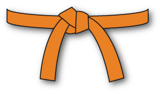
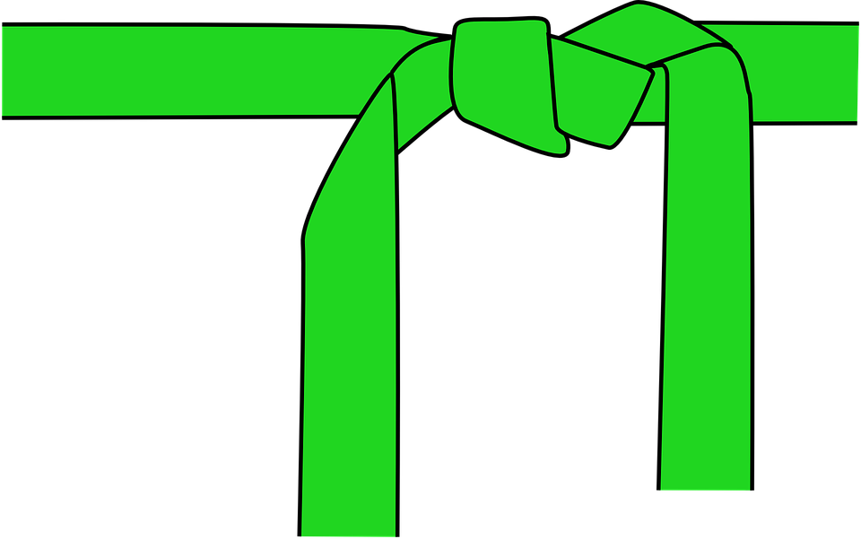
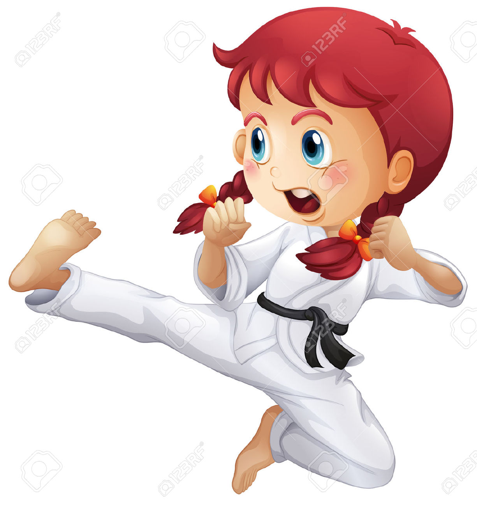

VARIOUS BELTS PROVIDED ACCORDING TO THE PERFORMANCE AND RANKING OF STUDENT
BELTS
Novice Belts

Yellow, orange and blue belts demonstrate amateur levels of preparing in kung fu,
with understudies traveling through those positions in a specific order. Understudies
at this level can hope to penetrate on fundamental strikes, pieces, positions and
comparative abilities, and in addition a few basic practice frames - the formal move
like practice you see in kung fu films. By going to a few times every week and honing
at home, an understudy can hope to spend about a year traveling through these positions.
Intermediate Belts

Intermediate level training incorporates propelled strikes and positions, self-preservation
blends, more recondite and complex structures and regularly showing background while coaching a
lesser understudy. Green, then dark colored belts demonstrate this level of preparing; many projects
utilize a few levels of darker belt. In a few schools, weapons preparing starts at this level. It by
and large takes one to two years to advance through the middle levels of kung fu preparing..
Advanced Belts

A black belt demonstrates propelled expertise in kung fu, and is regularly the default
capability for showing kung fu. Most understudies can gain their dark belt following three to
four years of devoted preparing, yet propelled "degrees" of dark belt proceed for whatever
remains of a professional's life. Dark belt prerequisites incorporate progressed katas,
weapons work, philosophical improvement and commitment to the specialty of kung fu..